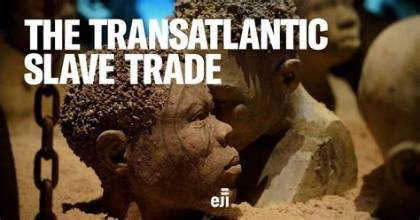

Built for Gold
In 1482, the Portuguese built Elmina Castle on Ghana's coast to trade for gold. It is the oldest European building still standing in sub-Saharan Africa.
Other European powers soon followed and built forts and castles along the coast. Cape Coast Castle began as a Swedish trading lodge in the 1650s and changed hands several times before the British took it in 1664.
A Darker Trade
From the 1600s, the coastal trade began to shift from gold to people. European traders, working with local rulers and merchants, bought captives who had been brought from inland.
Many were held in the castle dungeons, in dark, crowded and unhealthy conditions, until a ship arrived to carry them across the Atlantic. At Cape Coast Castle, the exit to the ships became known as the Door of No Return.
The castles were places of departure. Today, they are places of memory.
The Human Cost
Historians estimate that more than 12 million Africans were forced onto ships during the transatlantic slave trade, and many did not survive the voyage. Families were torn apart, and those who arrived in the Americas and the Caribbean were forced to work, mostly on plantations.
The Gold Coast was only one of many regions along the African coast involved in the trade, but its castles are among the best preserved reminders of it.

Ending the Trade
Britain banned its slave trade in 1807, and other countries followed over time, although illegal trading continued for decades. The Dutch handed Elmina to Britain in 1872, and in 1877 the British moved their capital from Cape Coast to Accra.
Key Moments
- 1482 Portuguese build Elmina Castle
- 1637 The Dutch capture Elmina
- 1664 The British take Cape Coast Castle
- 1807 Britain bans its slave trade
- 1872 The Dutch hand Elmina to Britain
- 1877 The capital moves from Cape Coast to Accra
- 1979 UNESCO lists the forts and castles as World Heritage
- 2019 Ghana holds the Year of Return
Remembering Today
Today, visitors can take guided tours of Elmina and Cape Coast Castle, see the dungeons, and learn the history in the museum at Cape Coast.
In 2019, Ghana held the Year of Return, inviting people of African descent around the world to visit, 400 years after the first enslaved Africans were taken to Virginia. For many visitors, it is a journey of remembrance and reconnection.